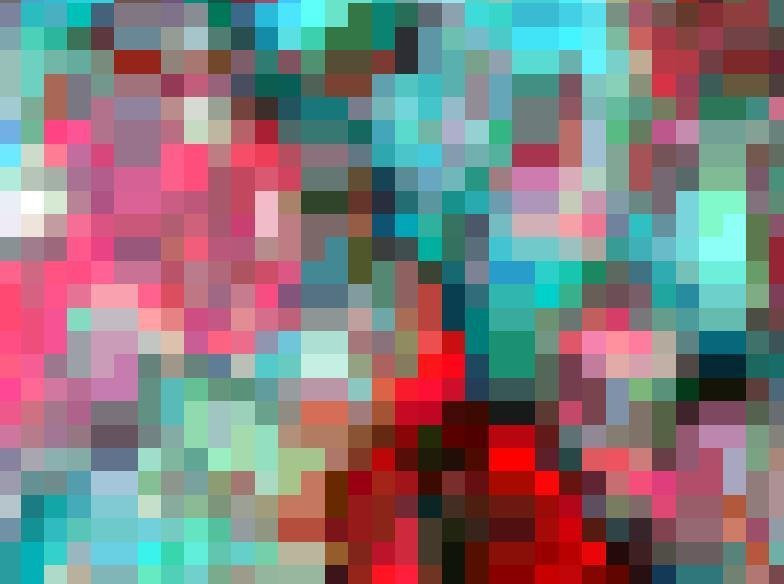
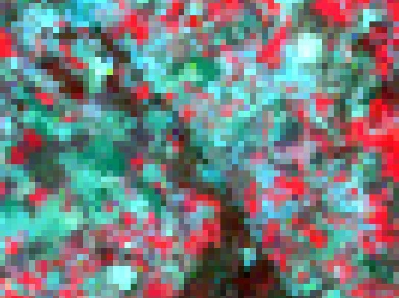
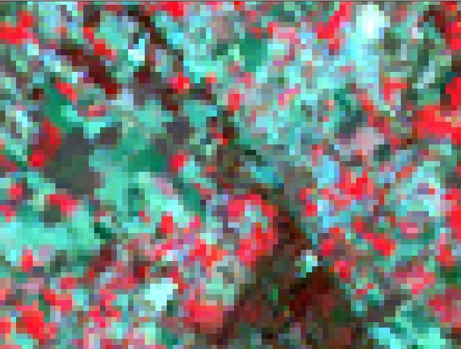
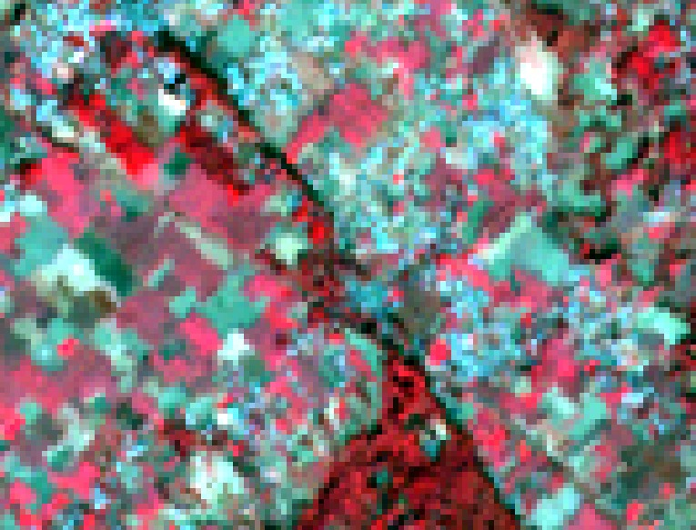
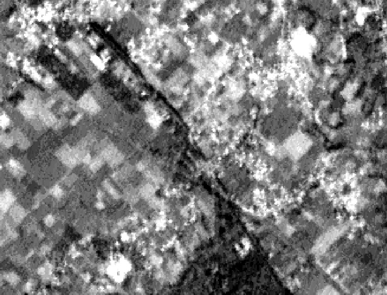
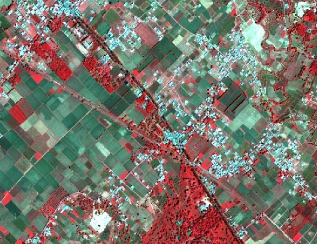
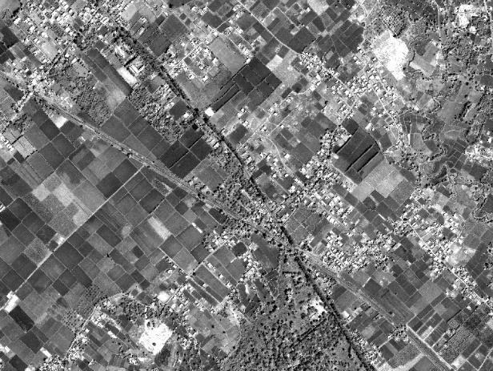
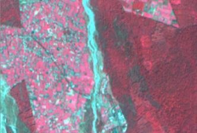
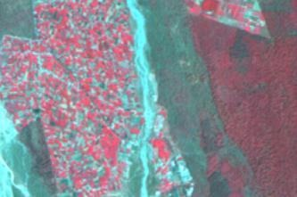

What each resolution actually means
Spatial Resolution
The ground area one pixel covers. "How much detail can I see?" A 1m pixel shows individual buildings; a 1km pixel shows only broad patterns. Defined by IFOV — the solid angle a detector is sensitive to.
Spectral Resolution
The width and number of wavelength bands a sensor detects. "How many colours can I see?" Narrower bands = higher spectral resolution. Panchromatic = 1 broad band; hyperspectral = hundreds of narrow ones.
Radiometric Resolution
Ability to discriminate small energy differences. "How many shades of gray?" Measured in bits — each bit doubles the grey levels. Higher bits = smoother gradients, more shadow detail.
Temporal Resolution
How often a satellite revisits the same area. "How often can I see changes?" Depends on orbit, swath width, and latitude. Weather needs hourly; vegetation monitoring can use weeks.
Spatial resolution is defined by the Instantaneous Field of View (IFOV): β = a/f (radians), where a is detector dimension and f is focal length. The Instantaneous Ground Field of View (IGFOV) = IFOV × h, where h is flying height. To get finer spatial resolution: smaller detector, longer focal length, or lower orbit.
Interactive IFOV & Ground Pixel Projector
Explore the optical geometry: Instantaneous Field of View (β = a/f) and Ground Resolution Element (IGFOV = β × H). Adjust altitude, focal length, and detector size in real time.
Think of IFOV like the beam of a flashlight pointed at the ground from an airplane. A narrower beam (smaller detector, or a zoomed-in lens) lights up a smaller, more detailed patch of ground — that patch is your pixel. Fly higher, and even a narrow beam spreads out to cover more ground, so your pixel gets bigger and blurrier. That's the whole trade-off in one sentence: closer or more zoomed-in = smaller, sharper pixels; farther away = bigger, blurrier pixels.

Interactive Spatial Resolution: "Before & After" Slider
Drag the slider divider horizontally across the same city landscape to see how detail degrades as pixel size increases from 10m (Sentinel-2) to 30m (Landsat) and 250m (MODIS).
The Spatial Resolution Ladder: Real Earth Observation Step-by-Step
Synthetic blur tests simulate resolution in software, but operational satellite payloads reveal true optical physics. Below is the exact same geographic scene captured across ISRO's operational sensor hierarchy — from regional synoptic monitoring down to sub-meter cadastral surveillance.

56 m GSDAWiFS (Advanced Wide Field)
IRS-P6 / Resourcesat-1 & 2Resolved Features: 740 km wide swath captures statewide vegetation vigor, major river drainage networks, and regional drought anomalies. Individual city streets blend into regional averages.

30 m GSDETM+ / OLI (Landsat Series)
Landsat 7 / 8 / 9Resolved Features: Agricultural field parcel boundaries, township outlines, multi-lane highways, and water reservoirs. Mixed urban pixels dominate residential zones.

23.5 m GSDLISS-III (Linear Self-Scanning)
IRS-1C / 1D & Resourcesat-1/2Resolved Features: Village settlements, secondary canal networks, distinct forest stand boundaries, and agricultural plot clusters across a 141 km swath.

5.8 m GSDLISS-IV Multispectral
Resourcesat-1 / 2 / 2AResolved Features: Arterial city avenues, individual farming plots, factory compounds, and airport runway layouts. Bridges across rivers are clearly demarcated.

2.5 m GSDCartosat-1 Stereo PAN
IRS-P5 (Fore +26° / Aft -5°)Resolved Features: Individual building footprints, suburban residential layouts, and two-lane tarmac roads. Enables national-scale 3D Digital Elevation Models (CartoDEM).

0.8 m GSDCartosat-2 High-Agility PAN
Cartosat-2 Series (ISRO)Resolved Features: Individual passenger vehicles on highways, road centerlines, aircraft on taxiways, roof HVAC structures, and cadastral property boundaries.

0.6 m GSDQuickBird Commercial VHR
DigitalGlobe / VHR ConstellationResolved Features: Precise road markings, parking stall divisions, small trees, footpaths, and structural roof edges for ultra-detailed urban cadastre.
Temporal Resolution: Orbit Revisit Calendar Simulator
A satellite cannot be everywhere at once. Select a satellite and click "Animate Month" to see how often its orbital path allows it to photograph the exact same target area on the ground.

Pass 1 · Pre-Flood Baseline (Dry River Bed)
Pass 2 · Peak Monsoon Surge (Submerged Agricultural Plains)Interactive Spectral Slicer: Panchromatic vs Multispectral vs Hyperspectral
See how spectral resolution transforms a scene: from 1 wide channel (Pan) to 13 discrete bands (Sentinel-2) to 224 contiguous channels (AVIRIS-NG / EnMAP).
Hyperspectral captures the sharp 2.20 μm kaolinite doublet absorption dip, clearly separating it from alunite.